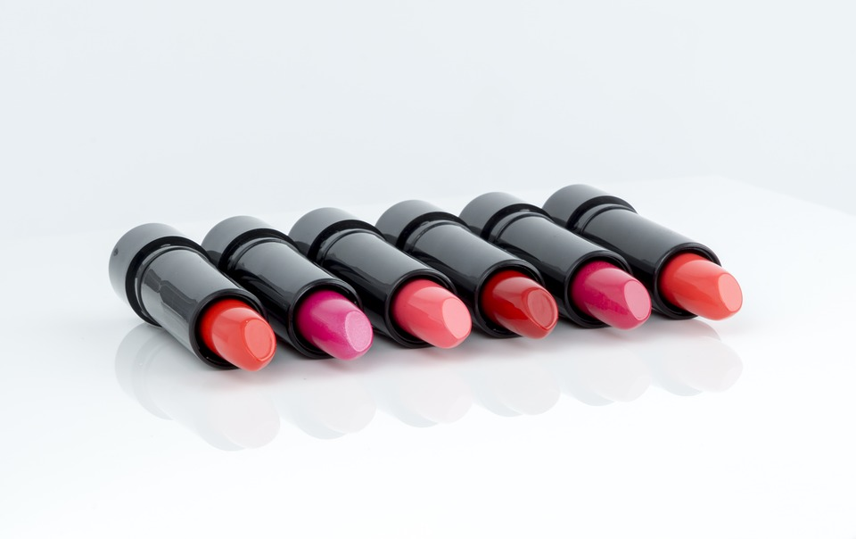
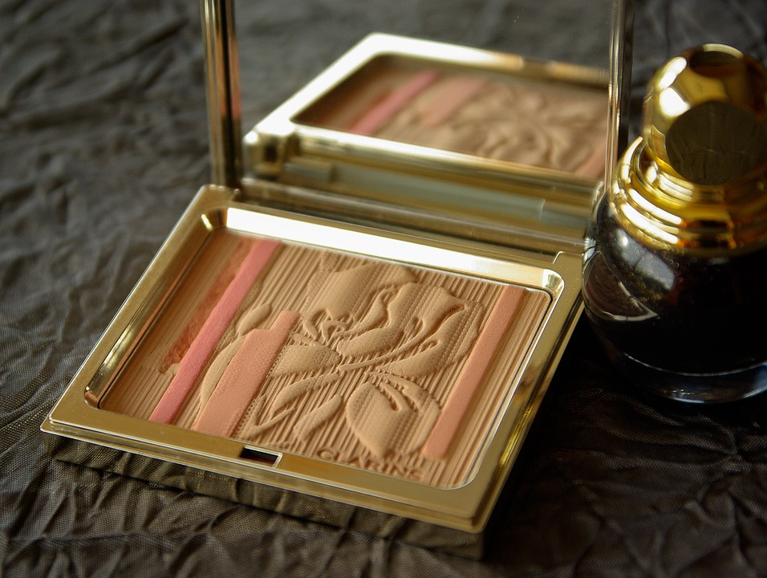
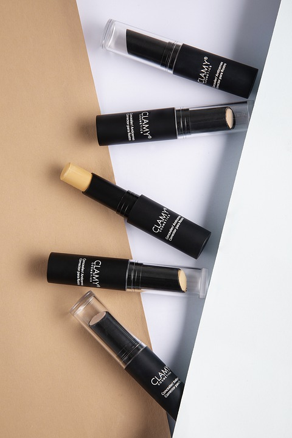

MariMake
| Foto | Descrição | Preço (R$) | Quantidade disponível |
|---|---|---|---|
|
Paleta de Sombras | Sombras com alta pigmentação, textura macia e aveludada para um olhar marcante. | 3 |
|  | Batom Mate | Batom que traz intensidade ao look com lábios coloridos, marcantes e saudáveis. | 12 |
|  | Pó Translucido Compacto | O pó translucido possui uma textura ultrafina que matifica a pele instantaneamente. | 10 |
|
Batom Líquido Mate | O batom líquido mate confere uma cor intensa, uniforme e duradoura com aquele efeito opaco que tanto amamos. | 6 |
|  | Corretivo | O corretivo disfarça bolsas e olheiras com sua ação antifadiga prolongada. | 2 |